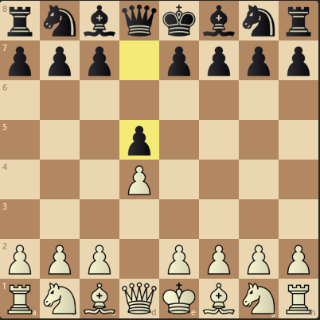

"The London System is an opening system in chess where White opens with 1.d4 and develops the dark-squared bishop to f4, then supports the d4-pawn with pawns on e3 and c3. The other bishop is developed to d3 (or occasionally e2) and the knights typically to f3 and d2. This set-up often results in a closed game. The London System can be used against virtually any Black defence and thus comprises a smaller body of opening theory than many other openings. Although it has a reputation as a solid opening, the London System has faced criticism for its tedious nature and lack of dynamic play." -Wikipedia

The starting position.

White starts with e4, black respongs with e5.

Both white and black bring out their king-sided horses.

White brings out their dark-squared bishop to f4.

Here you can see the London System's developmental goal with the pawns creating an arrow-like configuration.